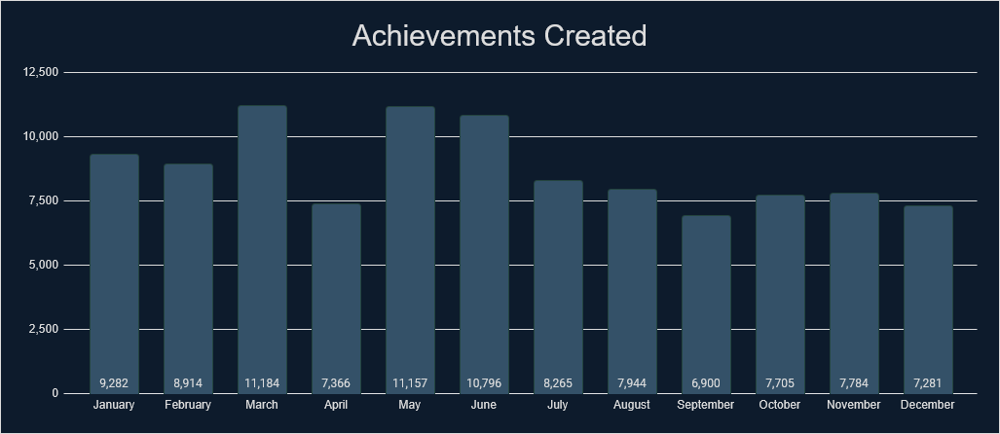
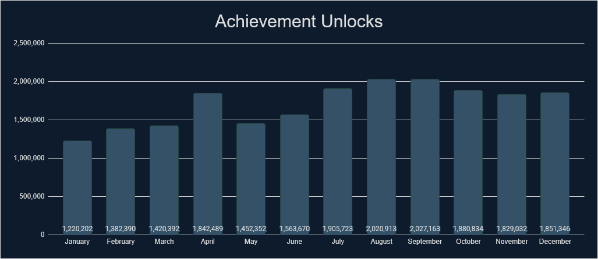
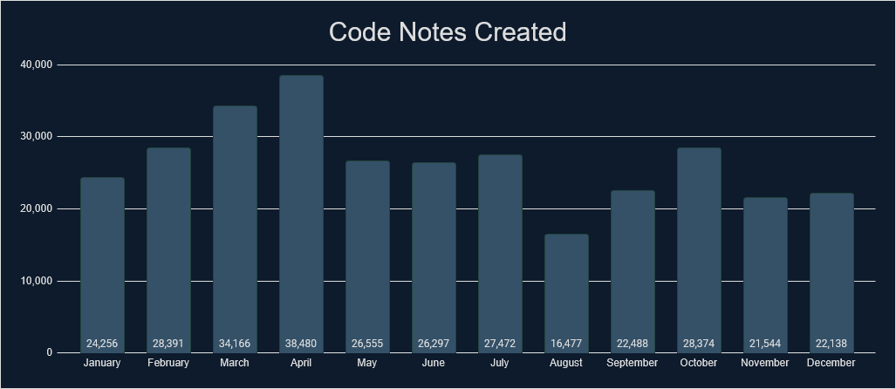
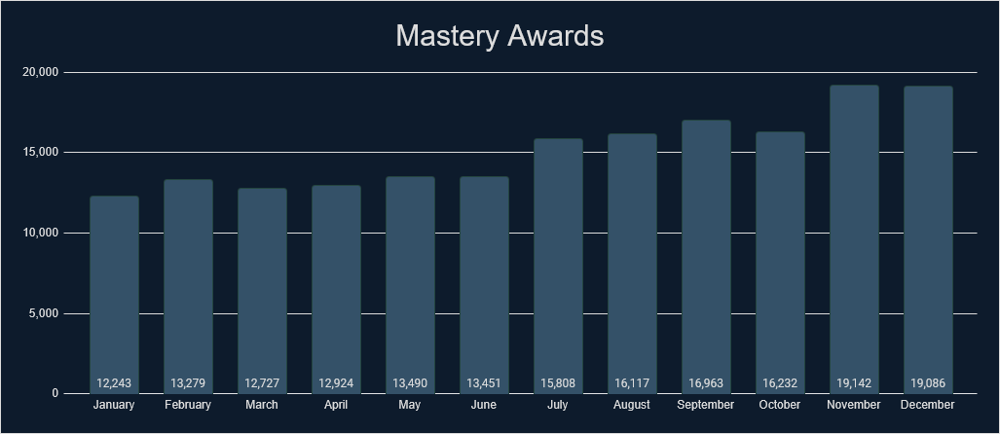
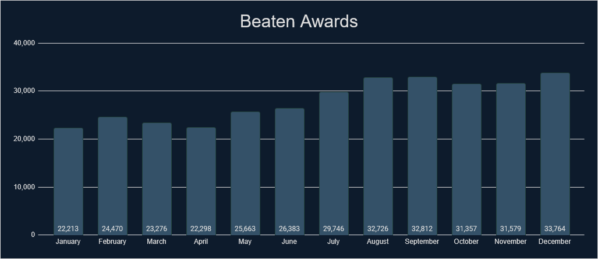
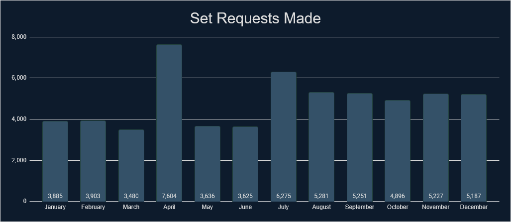
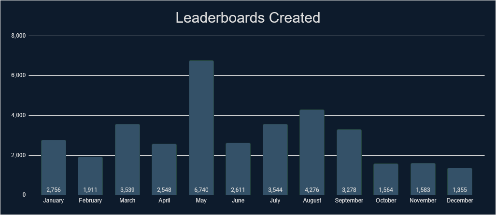

Intro
If you like looking at stats and data, then you have come to the right place. We’ve gathered tons of stats from 2024 that cover a wide range of measurable aspects that RetroAchievements offer. Check out what the community has accomplished.
General Stats
Check out some general stats from last year.
| Stat |
Value |
% Change from 2023 |
| Number of sets released. |
1,757 |
-2.87% |
| Number of achievements released. |
93,702 |
-2.7% |
| Number of hardcore achievements earned. |
19,692,284 |
+86.66% |
| Number of code notes created. |
316,638 |
-17.09% |
| Number of mastery awards awarded. |
181,462 |
+73.81% |
| Number of beaten awards awarded. |
336,287 |
+92.05% |
| Number of set requests made. |
58,250 |
+60.58% |
| Number of leaderboards created. |
35,427 |
+23.2% |
| Number of leaderboard entries submitted. |
3,937,331 |
+164.09% |
| Number of users who have earned at least 1 hardcore achievement. |
130,912 |
+87.46% |
| Number of total hardcore points earned by players. |
131,178,164 |
+91.89% |
| Number of total hardcore retro points earned by players. |
435,250,423 |
+75.47% |
| Number of user accounts created. |
381,332 |
+42.85% |
| Number of new user accounts reaching >=500 points. |
20,131 |
+175.69% |
Achievements Created
Monthly Breakdown

Console Breakdown
| Console | Achievements |
|---|
| 32X | 65 |
| 3DO Interactive Multiplayer | 505 |
| Amstrad CPC | 238 |
| Apple II | 270 |
| Arcade | 3,674 |
| Arcadia 2001 | 6 |
| Arduboy | 248 |
| Atari 2600 | 245 |
| Atari 7800 | 95 |
| Atari Jaguar | 85 |
| Atari Jaguar CD | 14 |
| Atari Lynx | 141 |
| ColecoVision | 132 |
| Dreamcast | 1,441 |
| Elektor TV Games Computer | 18 |
| Events | 433 |
| Fairchild Channel F | 23 |
| Game Boy | 1,830 |
| Game Boy Advance | 4,922 |
| Game Boy Color | 2,224 |
| Game Gear | 324 |
| GameCube | 13,340 |
| Genesis/Mega Drive | 2,388 |
| Intellivision | 159 |
| Interton VC 4000 | 15 |
| Magnavox Odyssey 2 | 59 |
| Master System | 343 |
| Console | Achievements |
|---|
| Mega Duck | 50 |
| MSX | 262 |
| Neo Geo CD | 170 |
| Neo Geo Pocket | 80 |
| NES/Famicom | 3,344 |
| Nintendo 64 | 3,353 |
| Nintendo DS | 6,148 |
| Nintendo DSi | 116 |
| PC Engine CD/TurboGrafx-CD | 1,089 |
| PC Engine/TurboGrafx-16 | 1,264 |
| PC-8000/8800 | 844 |
| PC-FX | 22 |
| PlayStation | 8,957 |
| PlayStation 2 | 19,647 |
| PlayStation Portable | 4,363 |
| Pokemon Mini | 18 |
| Saturn | 3,060 |
| Sega CD | 108 |
| SG-1000 | 28 |
| SNES/Super Famicom | 6,638 |
| Standalone | 210 |
| Uzebox | 107 |
| Vectrex | 85 |
| Virtual Boy | 19 |
| WASM-4 | 34 |
| Watara Supervision | 58 |
| WonderSwan | 391 |
Top 25 Achievement Creators
Check out the top 25 achievement creators last year and how many achievements they created.
| Rank |
Developer |
Achievements |
| 1 |
 Kinglink Kinglink |
2,906 |
| 2 |
 Amir96lx Amir96lx |
2,414 |
| 3 |
 AlexGatao AlexGatao |
2,220 |
| 4 |
 Vancleef Vancleef |
1,899 |
| 5 |
 SuperMeatBro SuperMeatBro |
1,868 |
| 6 |
 TheMysticalOne TheMysticalOne |
1,820 |
| 7 |
 Snow Snow |
1,797 |
| 8 |
 Layton Layton |
1,779 |
| 9 |
 solidification solidification |
1,615 |
| 10 |
 suspect15 suspect15 |
1,600 |
| 11 |
 Excessiveiser Excessiveiser |
1,470 |
| 12 |
 Raichi Raichi |
1,469 |
| 13 |
 Sines Sines |
1,462 |
| 14 |
 WilHiteWarrior WilHiteWarrior |
1,447 |
| 15 |
 Cheatsalot123 Cheatsalot123 |
1,348 |
| 16 |
 Hexadigital Hexadigital |
1,249 |
| 17 |
 NeonPug NeonPug |
1,232 |
| 18 |
 clymax clymax |
1,175 |
| 19 |
 timenoe timenoe |
1,126 |
| 20 |
 Bryan1150 Bryan1150 |
1,072 |
| 21 |
 Yurana Yurana |
1,065 |
| 22 |
 Retrokaiser Retrokaiser |
1,060 |
| 23 |
 ladynadiad ladynadiad |
1,036 |
| 24 |
 Alena Alena |
1,000 |
| 25 |
 Biendeo Biendeo |
998 |
Top 25 Developers
Check out some stats regarding unlocks and points awarded by the developers. Included is the number of unlocks, points and retro points awarded to the players. This data includes all achievements but only counts unlocks during 2024.
| Rank |
Developer |
Unlocks Awarded |
Points Awarded |
Retro Points Awarded |
| 1 |
 horizonxi horizonxi |
490,785 |
8,725,476 |
13,375,122 |
| 2 |
 SporyTike SporyTike |
425,211 |
2,342,244 |
7,571,384 |
| 3 |
Snow |
379,314 |
2,225,588 |
7,361,234 |
| 4 |
 Brian Brian |
371,960 |
2,754,894 |
7,626,060 |
| 5 |
 ThatAmericanSlacker ThatAmericanSlacker |
371,806 |
2,610,463 |
5,311,019 |
| 6 |
 GalacticSpear GalacticSpear |
354,849 |
2,733,429 |
15,589,007 |
| 7 |
 Delmaru Delmaru |
353,965 |
1,975,163 |
9,180,178 |
| 8 |
timenoe |
353,077 |
2,828,747 |
12,501,904 |
| 9 |
 televandalist televandalist |
346,150 |
2,633,283 |
8,419,248 |
| 10 |
Bryan1150 |
313,045 |
1,881,689 |
7,596,332 |
| 11 |
 TeddyWestside TeddyWestside |
282,839 |
1,654,800 |
4,319,820 |
| 12 |
 dude1286 dude1286 |
275,949 |
2,266,712 |
4,703,725 |
| 13 |
 Blazekickn Blazekickn |
272,020 |
1,627,060 |
6,753,003 |
| 14 |
 Salsa Salsa |
267,651 |
2,012,751 |
9,206,828 |
| 15 |
WilHiteWarrior |
245,299 |
1,806,989 |
6,493,130 |
| 16 |
 MGNS8M MGNS8M |
244,870 |
1,572,688 |
4,339,317 |
| 17 |
 Gollawiz Gollawiz |
241,518 |
1,494,389 |
8,888,998 |
| 18 |
 Dexterspet Dexterspet |
239,574 |
1,490,000 |
3,172,133 |
| 19 |
suspect15 |
236,396 |
1,538,994 |
10,545,017 |
| 20 |
 voiceofautumn voiceofautumn |
233,584 |
1,322,382 |
3,187,373 |
| 21 |
AlexGatao |
219,669 |
1,731,541 |
7,586,051 |
| 22 |
 Scott Scott |
195,605 |
1,021,470 |
2,306,117 |
| 23 |
 blendedsea blendedsea |
195,491 |
1,084,117 |
4,792,473 |
| 24 |
 TheJediSonic TheJediSonic |
194,310 |
1,221,785 |
5,963,551 |
| 25 |
 zxmega zxmega |
193,251 |
1,515,485 |
4,694,635 |
* Hardcore only
Achievement Unlocks
Monthly Breakdown

Console Breakdown
| Console | Unlocks |
|---|
| 32X | 13,969 |
| 3DO Interactive Multiplayer | 30,529 |
| Amstrad CPC | 6,616 |
| Apple II | 14,417 |
| Arcade | 416,980 |
| Arcadia 2001 | 3,571 |
| Arduboy | 44,759 |
| Atari 2600 | 139,335 |
| Atari 7800 | 12,573 |
| Atari Jaguar | 4,789 |
| Atari Jaguar CD | 1,403 |
| Atari Lynx | 8,298 |
| ColecoVision | 11,126 |
| Dreamcast | 248,056 |
| Elektor TV Games Computer | 5,034 |
| Events | 678,468 |
| Fairchild Channel F | 15,013 |
| Game Boy | 823,118 |
| Game Boy Advance | 1,841,919 |
| Game Boy Color | 506,869 |
| Game Gear | 60,976 |
| GameCube | 1,659,708 |
| Genesis/Mega Drive | 663,541 |
| Hubs | 681 |
| Intellivision | 7,623 |
| Interton VC 4000 | 6,002 |
| Magnavox Odyssey 2 | 5,277 |
| Master System | 104,651 |
| Console | Unlocks |
|---|
| Mega Duck | 5,974 |
| MSX | 9,049 |
| Neo Geo CD | 7,364 |
| Neo Geo Pocket | 19,975 |
| NES/Famicom | 1,532,534 |
| Nintendo 64 | 977,734 |
| Nintendo DS | 815,048 |
| Nintendo DSi | 19,974 |
| PC Engine CD/TurboGrafx-CD | 56,535 |
| PC Engine/TurboGrafx-16 | 94,850 |
| PC-8000/8800 | 12,835 |
| PC-FX | 1,975 |
| PlayStation | 2,455,722 |
| PlayStation 2 | 3,301,553 |
| PlayStation Portable | 915,494 |
| Pokemon Mini | 30,817 |
| Saturn | 124,156 |
| Sega CD | 40,403 |
| SG-1000 | 16,545 |
| SNES/Super Famicom | 2,049,484 |
| Standalone | 491,334 |
| Uzebox | 12,304 |
| Vectrex | 5,468 |
| Virtual Boy | 13,519 |
| WASM-4 | 23,420 |
| Watara Supervision | 5,439 |
| WonderSwan | 21,700 |
Top 25 Users
Check out who has the most achievement unlocks, points, and retro points last year.
| Rank |
User |
Achievements |
Points |
Retro Points |
| 1 |
 Reeve42 Reeve42 |
14,892 |
101,667 |
326,859 |
| 2 |
Amir96lx |
13,484 |
84,985 |
250,703 |
| 3 |
 grotesque grotesque |
12,865 |
74,186 |
141,343 |
| 4 |
 pitapocket17 pitapocket17 |
12,005 |
92,112 |
238,084 |
| 5 |
 Sutarion Sutarion |
11,863 |
64,949 |
160,874 |
| 6 |
 vaanxbahn vaanxbahn |
11,491 |
70,658 |
192,445 |
| 7 |
 Sarconius Sarconius |
11,366 |
97,619 |
723,056 |
| 8 |
 RevJohn RevJohn |
11,174 |
52,052 |
95,580 |
| 9 |
 manakate manakate |
10,951 |
67,311 |
223,176 |
| 10 |
 Lonoke31 Lonoke31 |
10,923 |
63,981 |
189,439 |
| 11 |
 ChronoGear ChronoGear |
10,733 |
89,243 |
599,308 |
| 12 |
 Kijin Kijin |
10,457 |
62,019 |
285,746 |
| 13 |
 StarrlightSims StarrlightSims |
10,242 |
69,178 |
245,076 |
| 14 |
 NEOMAR NEOMAR |
10,012 |
65,390 |
195,676 |
| 15 |
 Wiseman Wiseman |
9,960 |
91,492 |
936,237 |
| 16 |
 InsaniumCoil InsaniumCoil |
9,851 |
46,525 |
113,796 |
| 17 |
 OldSport OldSport |
9,608 |
75,449 |
1,029,036 |
| 18 |
 REMLEZAR REMLEZAR |
9,525 |
62,326 |
121,498 |
| 19 |
 GreninjaMan GreninjaMan |
9,411 |
62,535 |
531,224 |
| 20 |
 deewhiz deewhiz |
9,282 |
75,309 |
540,286 |
| 21 |
 NekroG NekroG |
9,263 |
56,002 |
135,249 |
| 22 |
 MarioKness MarioKness |
9,201 |
48,181 |
108,397 |
| 23 |
 Orph Orph |
9,152 |
66,712 |
480,929 |
| 24 |
 NimbusSpark NimbusSpark |
9,110 |
57,482 |
310,251 |
| 25 |
 narcisse narcisse |
9,061 |
43,933 |
69,696 |
Top 25 Awarded Achievements
Check out which achievements were earned the most last year. Limit one achievement per game.
| Rank |
Achievement |
Game |
Times Awarded |
| 1 |
 Giddy Up! Giddy Up! |
 Super Mario World Super Mario World |
8,536 |
| 2 |
 Shroooooms… Shroooooms… |
 Super Mario Bros. Super Mario Bros. |
6,833 |
| 3 |
 A New Journey A New Journey |
 Super Mario 64 Super Mario 64 |
6,216 |
| 4 |
 What is a Man? What is a Man? |
 Castlevania: Symphony of the Night Castlevania: Symphony of the Night |
5,408 |
| 5 |
 Amateur Collector Amateur Collector |
 Sonic the Hedgehog Sonic the Hedgehog |
5,096 |
| 6 |
 Crystal of the Crag Crystal of the Crag |
 Final Fantasy XI Final Fantasy XI |
4,978 |
| 7 |
 You Can Spell! You Can Spell! |
 Donkey Kong Country Donkey Kong Country |
4,966 |
| 8 |
Vermillion Venturer |
 Final Fantasy XI: Rise of the Zilart Final Fantasy XI: Rise of the Zilart |
4,690 |
| 9 |
 Rutabaga! Rutabaga! |
 Crash Bandicoot Crash Bandicoot |
4,303 |
| 10 |
 Welcome to HorizonXI (or RetroAchievements)! Welcome to HorizonXI (or RetroAchievements)! |
 On the Horizon On the Horizon |
4,222 |
| 11 |
 The First of Many The First of Many |
 God of War God of War |
4,108 |
| 12 |
 Prepare For Take-Off Prepare For Take-Off |
 Super Mario Bros. 3 Super Mario Bros. 3 |
3,860 |
| 13 |
 Illuminating Illuminating |
 The Legend of Zelda: A Link to the Past The Legend of Zelda: A Link to the Past |
3,724 |
| 14 |
 Humble Beginnings Humble Beginnings |
 Pokémon Emerald Version Pokémon Emerald Version |
3,637 |
| 15 |
 I Choose You! I Choose You! |
 Pokémon FireRed Version Pokémon FireRed Version |
3,617 |
| 16 |
 Delfino’s Dilemma Delfino’s Dilemma |
 Super Mario Sunshine Super Mario Sunshine |
3,366 |
| 17 |
 Mushroom Man Mushroom Man |
 Super Mario Land Super Mario Land |
3,320 |
| 18 |
 It’s Dangerous to Go Alone! It’s Dangerous to Go Alone! |
 The Legend of Zelda The Legend of Zelda |
3,049 |
| 19 |
 Journey Has Started Journey Has Started |
 Pokémon Red Version | Pokémon Blue Version Pokémon Red Version | Pokémon Blue Version |
3,031 |
| 20 |
 One First Step One First Step |
 Super Smash Bros. Melee Super Smash Bros. Melee |
2,951 |
| 21 |
 Life Leech Life Leech |
 Castlevania: Aria of Sorrow Castlevania: Aria of Sorrow |
2,936 |
| 22 |
Royal Spearman |
 Final Fantasy XI [Subset - Hero of Nations] Final Fantasy XI [Subset - Hero of Nations] |
2,752 |
| 23 |
 What a Nightmare… What a Nightmare… |
 Silent Hill Silent Hill |
2,751 |
| 24 |
 Double Double |
 Tetris (Nintendo) Tetris (Nintendo) |
2,644 |
| 25 |
 Newbie combo Newbie combo |
 Tekken 3 Tekken 3 |
2,581 |
* Hardcore only
Top 25 2024 Awarded Achievements
Check out which achievements created in 2024 were earned the most last year. Limit one achievement per game.
| Rank |
Achievement |
Game |
Times Awarded |
| 1 |
Crystal of the Crag |
Final Fantasy XI |
4,978 |
| 2 |
Vermillion Venturer |
Final Fantasy XI: Rise of the Zilart |
4,690 |
| 3 |
Welcome to HorizonXI (or RetroAchievements)! |
On the Horizon |
4,222 |
| 4 |
Delfino’s Dilemma |
Super Mario Sunshine |
3,366 |
| 5 |
One First Step |
Super Smash Bros. Melee |
2,951 |
| 6 |
Royal Spearman |
Final Fantasy XI [Subset - Hero of Nations] |
2,752 |
| 7 |
 The Result of Copper Sulfate The Result of Copper Sulfate |
 Mario Kart: Double Dash!! Mario Kart: Double Dash!! |
2,413 |
| 8 |
 Uh, Freaky Ghost Baby Uh, Freaky Ghost Baby |
 Luigi’s Mansion Luigi’s Mansion |
1,676 |
| 9 |
 Anchors Away Anchors Away |
 The Legend of Zelda: The Wind Waker The Legend of Zelda: The Wind Waker |
1,424 |
| 10 |
 Debt Journey has Started! Debt Journey has Started! |
 Animal Crossing Animal Crossing |
1,344 |
| 11 |
 The House of Slingshot The House of Slingshot |
 The Legend of Zelda: Twilight Princess The Legend of Zelda: Twilight Princess |
1,330 |
| 12 |
 Whoa! I’m Beat! Whoa! I’m Beat! |
 WarioWare, Inc.: Mega Party Games! WarioWare, Inc.: Mega Party Games! |
1,320 |
| 13 |
 Get a Head Start Get a Head Start |
 Crash Team Racing Crash Team Racing |
1,281 |
| 14 |
 Its Shape Is Similar to the Pikpik Brand Carrots I Love So Much Its Shape Is Similar to the Pikpik Brand Carrots I Love So Much |
 Pikmin Pikmin |
1,187 |
| 15 |
 Go Goombas! Go Goombas! |
 Paper Mario: The Thousand-Year Door Paper Mario: The Thousand-Year Door |
1,158 |
| 16 |
 Welcome To Monkey Island! Welcome To Monkey Island! |
 Super Monkey Ball 2 Super Monkey Ball 2 |
1,099 |
| 17 |
 If You Zig, Then I’ll Zag If You Zig, Then I’ll Zag |
 Pokémon Colosseum Pokémon Colosseum |
1,098 |
| 18 |
 In It to Win It In It to Win It |
 Midnight Club 3: DUB Edition Remix Midnight Club 3: DUB Edition Remix |
1,080 |
| 19 |
 So Much for a Vacation So Much for a Vacation |
 ~Hack~ Super Mario Eclipse ~Hack~ Super Mario Eclipse |
978 |
| 20 |
 Adventuring Through Fantastical Greens Adventuring Through Fantastical Greens |
 Kirby Air Ride Kirby Air Ride |
956 |
| 21 |
 Have a Rotten Day, Greenie! Have a Rotten Day, Greenie! |
 Wario World Wario World |
947 |
| 22 |
 Slaughter at Acre Slaughter at Acre |
 Dante’s Inferno Dante’s Inferno |
913 |
| 23 |
 Master of Crows Master of Crows |
 Achievement of the Week 2024 - Thanksgiving Achievement of the Week 2024 - Thanksgiving |
864 |
| 24 |
 Truffle Towers Truffle Towers |
 Dance Dance Revolution: Mario Mix Dance Dance Revolution: Mario Mix |
852 |
| 25 |
 Mushroom Cup 50cc Champ Mushroom Cup 50cc Champ |
 Mario Kart 64 Mario Kart 64 |
844 |
* Hardcore only
Code Notes
Monthly Breakdown

Console Breakdown
| Console | Notes |
|---|
| 32X | 65 |
| 3DO Interactive Multiplayer | 928 |
| Amstrad CPC | 1,128 |
| Apple II | 6,231 |
| Arcade | 7,100 |
| Arcadia 2001 | 25 |
| Arduboy | 557 |
| Atari 2600 | 513 |
| Atari 7800 | 236 |
| Atari Jaguar | 266 |
| Atari Jaguar CD | 46 |
| Atari Lynx | 311 |
| ColecoVision | 169 |
| DOS | 491 |
| Dreamcast | 3,022 |
| Elektor TV Games Computer | 36 |
| Fairchild Channel F | 58 |
| Game Boy | 6,015 |
| Game Boy Advance | 13,594 |
| Game Boy Color | 6,538 |
| Game Gear | 1,083 |
| GameCube | 61,081 |
| Genesis/Mega Drive | 7,760 |
| Intellivision | 176 |
| Interton VC 4000 | 41 |
| Magnavox Odyssey 2 | 154 |
| Master System | 916 |
| Console | Notes |
|---|
| Mega Duck | 58 |
| MSX | 398 |
| Neo Geo CD | 295 |
| Neo Geo Pocket | 430 |
| NES/Famicom | 10,720 |
| Nintendo 64 | 7,512 |
| Nintendo DS | 23,320 |
| Nintendo DSi | 831 |
| PC Engine CD/TurboGrafx-CD | 1,908 |
| PC Engine/TurboGrafx-16 | 1,725 |
| PC-8000/8800 | 1,518 |
| PC-FX | 190 |
| PlayStation | 27,818 |
| PlayStation 2 | 91,281 |
| PlayStation Portable | 31,380 |
| Pokemon Mini | 54 |
| Saturn | 8,632 |
| Sega CD | 200 |
| SG-1000 | 44 |
| SNES/Super Famicom | 21,079 |
| Uzebox | 184 |
| Vectrex | 198 |
| Virtual Boy | 46 |
| WASM-4 | 67 |
| Watara Supervision | 140 |
| WonderSwan | 504 |
Top 10 Code Note Creators
Check out which developers created the most code notes last year.
Mastery Awards
Monthly Breakdown

Console Breakdown
| Console | Awards |
|---|
| 32X | 349 |
| 3DO Interactive Multiplayer | 549 |
| Amstrad CPC | 183 |
| Apple II | 654 |
| Arcade | 3,153 |
| Arcadia 2001 | 243 |
| Arduboy | 2,889 |
| Atari 2600 | 5,548 |
| Atari 7800 | 372 |
| Atari Jaguar | 78 |
| Atari Jaguar CD | 51 |
| Atari Lynx | 348 |
| ColecoVision | 279 |
| Dreamcast | 1,382 |
| Elektor TV Games Computer | 583 |
| Events | 7,937 |
| Fairchild Channel F | 1,369 |
| Game Boy | 13,705 |
| Game Boy Advance | 17,136 |
| Game Boy Color | 8,669 |
| Game Gear | 1,173 |
| GameCube | 9,306 |
| Genesis/Mega Drive | 7,662 |
| Intellivision | 317 |
| Interton VC 4000 | 432 |
| Magnavox Odyssey 2 | 414 |
| Master System | 1,497 |
| Console | Awards |
|---|
| Mega Duck | 216 |
| MSX | 240 |
| Neo Geo CD | 71 |
| Neo Geo Pocket | 516 |
| NES/Famicom | 16,729 |
| Nintendo 64 | 8,980 |
| Nintendo DS | 6,202 |
| Nintendo DSi | 690 |
| PC Engine CD/TurboGrafx-CD | 670 |
| PC Engine/TurboGrafx-16 | 652 |
| PC-8000/8800 | 534 |
| PC-FX | 86 |
| PlayStation | 16,046 |
| PlayStation 2 | 13,274 |
| PlayStation Portable | 4,296 |
| Pokemon Mini | 2,326 |
| Saturn | 988 |
| Sega CD | 308 |
| SG-1000 | 714 |
| SNES/Super Famicom | 16,853 |
| Standalone | 562 |
| Uzebox | 754 |
| Vectrex | 303 |
| Virtual Boy | 379 |
| WASM-4 | 2,252 |
| Watara Supervision | 291 |
| WonderSwan | 252 |
Top 25 Mastery Awards
Top 25 Mastered Sets
Check out which sets were mastered most last year.
Beaten Awards
Monthly Breakdown

Console Breakdown
| Console | Awards |
|---|
| 32X | 523 |
| 3DO Interactive Multiplayer | 661 |
| Amstrad CPC | 279 |
| Apple II | 737 |
| Arcade | 15,277 |
| Arcadia 2001 | 359 |
| Arduboy | 3,260 |
| Atari 2600 | 8,148 |
| Atari 7800 | 544 |
| Atari Jaguar | 135 |
| Atari Jaguar CD | 75 |
| Atari Lynx | 446 |
| ColecoVision | 508 |
| Dreamcast | 3,463 |
| Elektor TV Games Computer | 654 |
| Fairchild Channel F | 1,589 |
| Game Boy | 20,106 |
| Game Boy Advance | 31,507 |
| Game Boy Color | 12,379 |
| Game Gear | 2,000 |
| GameCube | 22,945 |
| Genesis/Mega Drive | 14,414 |
| Intellivision | 432 |
| Interton VC 4000 | 468 |
| Magnavox Odyssey 2 | 501 |
| Master System | 2,759 |
| Mega Duck | 248 |
| Console | Awards |
|---|
| MSX | 295 |
| Neo Geo CD | 240 |
| Neo Geo Pocket | 929 |
| NES/Famicom | 32,247 |
| Nintendo 64 | 15,843 |
| Nintendo DS | 11,167 |
| Nintendo DSi | 865 |
| PC Engine CD/TurboGrafx-CD | 1,104 |
| PC Engine/TurboGrafx-16 | 1,375 |
| PC-8000/8800 | 555 |
| PC-FX | 109 |
| PlayStation | 34,866 |
| PlayStation 2 | 32,214 |
| PlayStation Portable | 9,447 |
| Pokemon Mini | 2,555 |
| Saturn | 2,126 |
| Sega CD | 687 |
| SG-1000 | 954 |
| SNES/Super Famicom | 33,525 |
| Standalone | 5,529 |
| Uzebox | 892 |
| Vectrex | 414 |
| Virtual Boy | 493 |
| WASM-4 | 2,646 |
| Watara Supervision | 323 |
| WonderSwan | 470 |
Top 25 Beaten Awards
Top 25 Beaten Sets
Check out which sets were mastered most last year.
| Rank |
Game |
Awards |
| 1 |
Final Fantasy XI (Standalone) |
3,593 |
| 2 |
Final Fantasy XI: Rise of the Zilart (Standalone) |
1,936 |
| 3 |
Super Mario World (SNES/Super Famicom) |
1,932 |
| 4 |
Super Mario 64 (Nintendo 64) |
1,519 |
| 5 |
 Super Smash Bros. (Nintendo 64) Super Smash Bros. (Nintendo 64) |
1,261 |
| 6 |
Castlevania: Symphony of the Night (PlayStation) |
1,253 |
| 7 |
Tekken 3 (PlayStation) |
1,236 |
| 8 |
Pokémon FireRed Version (Game Boy Advance) |
1,122 |
| 9 |
Donkey Kong Country (SNES/Super Famicom) |
1,086 |
| 10 |
Pokémon Red Version | Pokémon Blue Version (Game Boy) |
1,065 |
| 11 |
Super Mario Sunshine (GameCube) |
1,036 |
| 12 |
 Kirby’s Dream Land (Game Boy) Kirby’s Dream Land (Game Boy) |
1,030 |
| 13 |
Luigi’s Mansion (GameCube) |
993 |
| 14 |
 Spyro the Dragon (PlayStation) Spyro the Dragon (PlayStation) |
990 |
| 15 |
Super Mario Land (Game Boy) |
968 |
| 16 |
Super Mario Bros. (NES/Famicom) |
964 |
| 17 |
Crash Bandicoot (PlayStation) |
920 |
| 18 |
Pokémon Emerald Version (Game Boy Advance) |
859 |
| 19 |
Castlevania: Aria of Sorrow (Game Boy Advance) |
858 |
| 20 |
Crash Team Racing (PlayStation) |
840 |
| 21 |
WarioWare, Inc.: Mega Party Games! (GameCube) |
827 |
| 22 |
 Super Metroid (SNES/Super Famicom) Super Metroid (SNES/Super Famicom) |
801 |
| 23 |
 Crash Bandicoot 3: Warped (PlayStation) Crash Bandicoot 3: Warped (PlayStation) |
799 |
| 24 |
God of War (PlayStation 2) |
797 |
| 25 |
 Pokémon Yellow Version: Special Pikachu Edition (Game Boy) Pokémon Yellow Version: Special Pikachu Edition (Game Boy) |
792 |
Set Requests
Monthly Breakdown

Console Breakdown
| Console | Requests |
|---|
| 32X | 21 |
| 3DO Interactive Multiplayer | 174 |
| Amiga | 32 |
| Amstrad CPC | 38 |
| Apple II | 98 |
| Arcade | 1,921 |
| Arcadia 2001 | 2 |
| Arduboy | 8 |
| Atari 2600 | 102 |
| Atari 5200 | 2 |
| Atari 7800 | 24 |
| Atari Jaguar | 22 |
| Atari Jaguar CD | 4 |
| Atari Lynx | 19 |
| Atari ST | 2 |
| ColecoVision | 23 |
| Commodore 64 | 27 |
| DOS | 414 |
| Dreamcast | 1,207 |
| Elektor TV Games Computer | 3 |
| Events | 23 |
| Fairchild Channel F | 16 |
| FM Towns | 1 |
| Game & Watch | 6 |
| Game Boy | 619 |
| Game Boy Advance | 2,562 |
| Game Boy Color | 592 |
| Game Gear | 123 |
| GameCube | 7,746 |
| Genesis/Mega Drive | 1,044 |
| Intellivision | 16 |
| Interton VC 4000 | 2 |
| Magnavox Odyssey 2 | 7 |
| Master System | 266 |
| Mega Duck | 5 |
| MSX | 78 |
| Neo Geo CD | 84 |
| Console | Requests |
|---|
| Neo Geo Pocket | 15 |
| NES/Famicom | 1,206 |
| Nintendo 3DS | 513 |
| Nintendo 64 | 1,298 |
| Nintendo DS | 3,570 |
| Nintendo DSi | 105 |
| Nokia N-Gage | 17 |
| PC Engine CD/TurboGrafx-CD | 238 |
| PC Engine/TurboGrafx-16 | 99 |
| PC-8000/8800 | 69 |
| PC-9800 | 111 |
| PC-FX | 10 |
| Philips CD-i | 47 |
| PlayStation | 5,636 |
| PlayStation 2 | 19,690 |
| PlayStation Portable | 3,748 |
| Pokemon Mini | 5 |
| Saturn | 593 |
| Sega CD | 174 |
| Sega Pico | 4 |
| SG-1000 | 1 |
| Sharp X68000 | 6 |
| SNES/Super Famicom | 2,281 |
| Standalone | 103 |
| Super Cassette Vision | 1 |
| TIC-80 | 6 |
| Uzebox | 7 |
| Vectrex | 1 |
| Virtual Boy | 18 |
| WASM-4 | 4 |
| Wii | 871 |
| Wii U | 155 |
| WonderSwan | 110 |
| Xbox | 185 |
| Zeebo | 13 |
| ZX Spectrum | 7 |
Leaderboards
Monthly Breakdown

Console Breakdown
| Console | Leaderboards |
|---|
| 3DO Interactive Multiplayer | 99 |
| Amstrad CPC | 42 |
| Apple II | 7 |
| Arcade | 863 |
| Arcadia 2001 | 3 |
| Arduboy | 75 |
| Atari 2600 | 84 |
| Atari 7800 | 13 |
| Atari Jaguar | 17 |
| Atari Jaguar CD | 1 |
| Atari Lynx | 43 |
| ColecoVision | 15 |
| Dreamcast | 987 |
| Elektor TV Games Computer | 4 |
| Fairchild Channel F | 1 |
| Game Boy | 206 |
| Game Boy Advance | 1,442 |
| Game Boy Color | 447 |
| Game Gear | 117 |
| GameCube | 6,058 |
| Genesis/Mega Drive | 809 |
| Intellivision | 20 |
| Interton VC 4000 | 12 |
| Magnavox Odyssey 2 | 6 |
| Master System | 26 |
| Console | Leaderboards |
|---|
| Mega Duck | 19 |
| MSX | 17 |
| Neo Geo CD | 40 |
| Neo Geo Pocket | 4 |
| NES/Famicom | 500 |
| Nintendo 64 | 746 |
| Nintendo DS | 2,145 |
| Nintendo DSi | 62 |
| PC Engine CD/TurboGrafx-CD | 154 |
| PC Engine/TurboGrafx-16 | 272 |
| PC-8000/8800 | 344 |
| PC-FX | 3 |
| PlayStation | 4,930 |
| PlayStation 2 | 10,082 |
| PlayStation Portable | 2,710 |
| Saturn | 842 |
| Sega CD | 104 |
| SG-1000 | 8 |
| SNES/Super Famicom | 1,246 |
| Uzebox | 32 |
| Vectrex | 14 |
| Virtual Boy | 8 |
| WASM-4 | 8 |
| Watara Supervision | 7 |
| WonderSwan | 11 |
Top 25 Leaderboard Creators
Check out which developers created the most leaderboards last year.
 By
MrOwnership
By
MrOwnership
 wolfman2000
wolfman2000  BigDonRob
BigDonRob  ArchWCR96
ArchWCR96  Lumino
Lumino  Bedtime
Bedtime  Whoops
Whoops  ChocoMilk
ChocoMilk  Hexcreed
Hexcreed  Crystalline343
Crystalline343  Timmay
Timmay  MiningMario
MiningMario  NeoRetroGamer
NeoRetroGamer  Tayadaoc
Tayadaoc  Prota
Prota  tmap
tmap  R3ZM4N
R3ZM4N  Jungon
Jungon  thatoneguy1851
thatoneguy1851  atvdriver
atvdriver  Justrokman
Justrokman 


 midgetstrawdog
midgetstrawdog  Xionx
Xionx  mudrik
mudrik  WanderingHeiho
WanderingHeiho  BahamutVoid
BahamutVoid  Lilihierax
Lilihierax  Souzooka
Souzooka  NamcoPlayer9871
NamcoPlayer9871  AuburnRDM
AuburnRDM  tomojin
tomojin  Tybis
Tybis